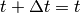

When I run kmos the GUI way and close it, it seems to hang and I need to use the window manager to kill it.
This is a bug waiting to be fixed. To avoid it close the window showing the atoms object by clicking on its close button or Alt-F4 or whichever shortcut your WM uses.
Running a model it sometimes prints Warning: numerical precision too low, to resolve time-steps
This means that the kMC step of the current process was so small compared to the current kMC time that for the processor . This should under normal circumstances only occur if you changed external conditions during a kMC run.
Otherwise it could mean that your rate constants vary over 12 or more orders of magnitude. If this is the case one needs to wonder whether non-coarse graind kMC is actually the right approach for the system. On the hand because the selection of the next process will no longer be reliable and second because reasonable sampling of all involved process may no longer happen.
This is explained in detail at Manipulating the Model at Runtime though the import bit is that you call
model._adjust_database()
after changing the occupation and before doing the next kMC step.
More to follow. Please post issues here or via email mjhoffmann .at. gmail .dot. com or via twitter @maxjhoffmann
Todo
Explain post-mortem procedure